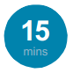
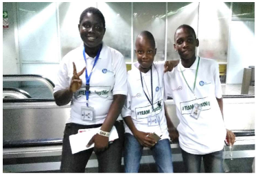

Everyone Can Be A Goal Keeper

Learning Outcome
• Students will understand what makes a Goalkeeper
for the Sustainable Development Goals (SDGs)
• Students will identify and understand the skills
and knowledge they already possess to contribute
to the SDGs
• Students will learn to justify their opinions
Wider Context of the Lesson Plan
This lesson plan aims to instil in students the belief
that everyone has the potential to be a Goalkeeper
and to take action for the Sustainable Development
Goals (SDGs). By understanding everyone needs
to be involved in the achievement of the SDGs,
students will identify and appreciate the different
skills of all individuals, as well as themselves. This
lesson plan links to the key criteria of the 2018 OECD
Pisa Assessment framework: Global Competence.
Described as “the capacity to examine local, global
and intercultural issues, to understand and appreciate
the perspectives and world views of others, to engage
in open, appropriate and effective interactions with
people from different cultures, and to act for collective
well-being and sustainable development.”
http://www.oecd.org/pisa/pisa-2018-global-competence.html
Resources
This lesson can be done with or without internet access.
With Internet access:
Camera or camera phones/laptops/ipads to upload
photos of students to the Goalkeeper Me app.
Without internet access:
Pens, paints, materials for a collage, mirrors and the
Goalkeeper Portrait activity sheet.
Note to Educators
This lesson involves students reflecting on their own skills, personality and knowledge by creating a Goalkeeper portrait.
Some students may not feel comfortable with having their photograph taken and therefore can be asked to create a
Goalkeeper portrait of another student or famous Goalkeeper for the SDGs. You might also see the SDGs referred to as
The Global Goals. These are the same thing, use the terminology you prefer.
This lesson also involves uploading photos of students to the internet. Ensure this is in alignment with
your school privacy and safeguarding policy and read the Terms and Conditions of the Goalkeeper
app: http://cdn.worldslargestlesson.globalgoals.org/2018/06/goalkeeper-privacy1-1.pdf
Acknowledgements
With special thanks to Chris Gadbury, Twitter: @chrisgadbury www.magicstorybooks.com,
Memory Banda: https://memorybanda.blogspot.com/
Ndubuisi Uchea & Hayel Wartemberg: https://wordonthecurb.co.uk/
Odeogbola Ayodele, Adeeko Olalekan: Abeokuta Grammar School, Abeokuta & Baptist Boys’ high School Abeokuta
(both in Nigeria)
Step 1: Activating Prior Knowledge
Note: This lesson assumes that students have an awareness of the SDGs already. A link to
World’s Largest Lesson Part 1 animation which introduces students to the Goals can be found
at http://worldslargestlesson.globalgoals.org/resources-for-teaching-the-sdgs-in-nigeria/
Ask the following questions for a quick recap of students’ SDGs knowledge. This can be done as a Think, Pair, Share
or a whole class activity: What are the SDGs aiming to achieve? Why are they important? How many Goals are there?
Step 2: Identifying Who is Helping to Achieve the SDGs Already
Ask students the question: Who is responsible for achieving the SDGs?
Possible prompts: Governments, NGOs/charities, the UN, businesses, schools, children, adults - EVERYONE!
Next ask the question: Do young people have a responsibility to achieve the SDGs?
Can young people make a difference to the SDGs?
Discuss some different answers and opinions and explain that even from a very young age, children and young
people can have meaningful impact on the Goals. Watch the World’s Largest Lesson Part 2 animation (http://
worldslargestlesson.globalgoals.org/resources-for-teaching-the-sdgs-in-nigeria/) to see examples of ordinary young
people taking action for the Goals. And/or you could show students examples from the World’s Largest Lesson
interactive map and look at actions other young people are taking for the SDGs.
Explain that these people could be called Goalkeepers because they are standing up and taking action for the SDGs.
They are ordinary people that care about making their schools, homes, communities and countries better for everyone
to live in now and they care about protecting them for the future. They use the Goals as a way of linking their action to a
Global plan to make the world fairer and more just. Students can read more about other young Goalkeepers from around
the world in Appendix 1-4.
Step 3: Connecting The Skills That People Have To The SDGs
Note: In the following activity there are no right and wrong answers. The activity is designed
to prompt discussion amongst students by asking open questions which challenge students
to justify their ideas and opinions.
Read aloud/show the quote below from Goalkeeper Memory Banda (see Appendix 3 for more about
Memory’s incredible work in achieving Goal 5).
“There are no superpowers for one to be a Goalkeeper, everyone can be a Goalkeeper by simply choosing
any of the SDGs and starting to push for progress.”
Discuss this quotation as a class - do students agree? Explain that everyone has different skills and knowledge to
achieve the Goals. It is how students use these to achieve the SDGs that is important. As a Goalkeeper decides to
stand up and take action - even if they experience setbacks and disappointments they remain positive, optimistic
determined that the Goals will be achieved!
Show the ‘Making Connections Between the SDGs’ activity sheet (Appendix 5). This activity is to help students
identify the type of skills that might be needed to achieve each of the Goals. Display the 15 green words suggested in
Appendix 6 (you may wish to edit this list for your school setting). Pick one word to get started e.g creative. Write this
in the frst red rectangle in the middle of the activity sheet.
Next ask students - How would the skill of creativity contribute to the Goals? Which Goal(s) would be affected the
most? Encourage students to justify their opinions and choices. Take a few suggestions from the class and connect
creative with the chosen Goals by drawing a line from the word to all the relevant Goals.
Students can then complete the rest of the worksheet by choosing which other skills listed in Appendix 6 they think are
the most important for achieving the Goals and connecting those skills to the Goals they think will most beneft.
Throughout the activity, stop the class to ask students which skills they have identifed as most important. Ask students
to share some of their opinions as to why they have selected a skill for a specifc Goal.
Note: There are no right or wrong answers here as it may depend on what students feel. Some skills may even be
relevant to all the Goals.
Challenge: Ask students why is it important that we have lots of different people with different skills, interests and
knowledge to help achieve the Goals? Because the problems the world faces are enormous and varied and often there
is not one solution or answer.
Step 4: Realising Individual Potential
The next step is for students to identify their own personal skills. Invite students to spend
some time thinking about their answers to the following questions. They may want to confer
with a partner for further suggestions.
1.What is special about you that makes you unique?
2.What about you means you have the potential to be a Goalkeeper?
3.What skills or characteristics do you already have that you could develop further to become a Goalkeeper?
4.What kind of person do you want to be when you are older?
Encourage students to think about and select as many words as possible. It is important to stress to students that
they are not choosing words that describe physical appearance, but rather words to describe characteristics, skills
and knowledge. As a prompt, you could refer to the words listed in Appendix 6.
Step 5: Creating a Goalkeeper Portrait
Next show the Goalkeeper Me app. Explain that students will need to select the 3 words that they believe
can be most helpful to them as they take action for the SDGs. Use this opportunity to explain that it is about
accepting everyone is different and that their different interests and ambitions are what is needed to achieve the
SDGs. You could show some examples of Goalkeeper portraits: http://perfectdaylondon.com/projects/goalkeepers/
Students upload a photo of themselves on the Goalkeeper app website and can personalise their
portraits according to colour and words. (See Appendix 7 for the full list of instructions).
Teachers could also demonstrate uploading a photo using multimedia or use own smartphone as an example
(particularly in low cost schools.)
Alternative: If camera phones/cameras are not available provide mirrors and invite students to draw/paint or make
a collage image of themselves. Students can then use this image and their 3 chosen words to create a Goalkeeper
portrait (See the Goalkeeper Portrait template in Appendix 8). The Goalkeeper portraits can then be shown as a
classroom or school display. Challenge students to think where else they could displayed. Where could they display
their Goalkeeper portraits to help more people know about the SDGs?
Step 6: Now You’re Ready - Take Your First Action!
Once students have identifed the skills and knowledge they already possess to become Goalkeepers,
they are ready to take action for the SDGs! Ask students the following questions to discuss as a class:
• What actions can you start taking for the Goals today?
• What do you want to do for the Goals as a class?
• What questions do you have about the Goals?
Watch World’s Largest Lesson’s Part 3 Animation http://worldslargestlesson.globalgoals.org/resources-for-teaching-the-sdgsin-nigeria/ for inspiration on how to get started today!
Please share your Goalkeeper portraits with us! Join thousands of other young Goalkeepers by adding your learning
to our interactive map. You can also tweet us Twitter: @WorldsLessonNG Facebook: @WorldsLessonNG
Instagram: @WorldsLessonNG email: worldslessonnigeria@outlook.com
Extension Activities:
• Show students our Student Action tab on
the World’s Largest Lesson website http://
worldslargestlesson.globalgoals.org/ for inspiration
on how to take action for the SDGs.
• Create a Community Action Project to help bring about
change in the local community: http://worldslargestlesson.
globalgoals.org/student-led-change-projects/
• Watch this short flm (Vimeo link https://vimeo.
com/268764152, Youtube link https://www.youtube.com/
watch?v=lf4jpEhRubs) - Please note this flm is only
available in English) about famous individuals from the
past. Ask students the following questions: If the people
in this video were still alive would they be GoalKeepers?
Which Goals do you think they would stand for? What
about these people means they are GoalKeepers? What
characteristics might they have to have shown in order
to achieve the remarkable feats they did? This could
be set either as a homework or form the beginning of
a history project looking at famous historical fgures.
• Ask students to research other people from their
own countries who they think should be called
Goalkeepers. Ask students to prepare a short
written piece detailing and explaining why they
think they should be a Goalkeeper. What can
students learn from these individuals? Could they
be invited to come and speak at your school? Or
help to inspire young people to take action?
• Anyone can create a Goalkeeper portrait! Encourage
students to share this with their parents, families
and friends to spread the SDGs message
• Ask students to explore and research the
Goalkeepers event (https://www.globalgoals.org/
goalkeepers) held each year. Who were previous
guests and attendees? What actions did they take
for the Goals to be achieved? Why are celebratory
events like this important to achieve the SDGs?
Appendix 1: Examples of Young Goalkeepers from around the World

Olude Marvelous, Ernest Ogunyemi,
and Amao David – Nigeria
Team Aqua is a team of three boys— Olude Marvelous, Ernest Ogunyemi, and Amao David—who came up with the idea of indigenizing the bio-sand water to provide portable water to people in their community. The indigenous bio-sand water flter project which they came up with makes use of locally available materials, which means that it is cheap and affordable, and it is currently in use in their school and in a number of households in their community.
1. What inspired you to take action for the SDGs?
Mainly, it was the environment. Living in a community where sanitation is probably a fantasy, a country where
the number of people with clean and safe drinking water are far fewer than those who use smartphones.
Add to that the fact that nobody seems to care, not because they don’t want to, but rather because they
lack the wherewithal to. As a result, all we could think of was how we could, by our little contribution,
cause a little change: a change that means families have portable water, and lives are saved.
2. What motivates you to keep going?
Our motivation, frst, was the Beyond School Community Challenge, an initiative of the Mandela Washington
Fellows Alumni in Nigeria, where the judges and many more people supported our project by: awarding us a cash
prize, sharing experiences and telling us how we could improve. That was the start-up motivation, but daily our
motivation is the impact, though little, the project has had and continues to have on our community, and how many
young people are one step ahead to make moves too. Our frst project, which was a bio-gas plant for the school
laboratory, has always motivated us to keep working on the indigenous bio-sand water flter project.
3. Why do you think young people are important in helping to achieve the SDGs?
Our answer is “why-not”. Having met a whole lot of young people from all over Nigeria and many others from
around the world who are helping to make the world a better place, one would only wonder what they can do in
helping us all achieve the Goals. Young people possess a kind of magical spirit that gives them the will to pursue
and achieve whatever it is they set their mind to achieve, despite the odds and hurdles that lace their path. Add to
that the fact that the young people in the world today, almost two billion, are an enormous force. That there are so
many of us here means: we play a major role in whatever happens in our world. Also, young people are very
important because most of the SDGs are their goals. It is the young people who need
Quality Education more, it is the young people who will be here to witness whatever does/doesn’t
(depending on how we deal with it) befall the earth.
4. What does being a Goalkeeper mean to you?
To be a Goalkeeper to us is to live each day in a way that affects our community for good; it is the small joy that we
feel knowing that somebody somewhere is safe; that girls and boys are not lost to the variety of water diseases that
have killed most of our dreams in sub-Saharan Africa and in other parts of the world.
Appendix 2: Examples of Young Goalkeepers from around the World

Comfort Ijaola, Victor Aromose and Alfred Adeyemi from Nigeria
Comfort, Victor and Alfred are K11th and K8th graders is a famous public high school in Southern Nigeria addressing teenage sexual violence in Nigeria through innovative means. The rate at which girls are assaulted and molested in their communities prompted the students to start a sustainable action plan as a high school. Students worked collaboratively to design the model for Just Nig Project. The Project is the first of its kind that launched Nigeria to be part of the Global Diamond Challenge as a World Finalist in 2019.
1. What inspired you to take action for the SDGs?
As a team we found out that teenage girls around the world especially in Nigeria are facing a lot of challenges of which
sexual assault and harassment is a major one. We found out that this problem skyrockets on a daily basis according to
statistics. Also, personal experiences as well as peoples life stories have inspired us to take action for Goal 5 - Gender
Inequality
2. What motivates you to keep going?
Technology has been a major influence on the execution of our Goal, it has kept us going from the onset. Also the
passion we have for this Goal is what keeps us going. Using the internet has allowed us to impact people on a global
scale. An example of this is a website which we have created and has served as a major tool in achieving this Goal.
The positive response from lives we save also keeps us going.
3. Why do you think young people are important in helping to achieve the SDGs?
We are in the 21st century and the world is filled with young people. This sends a signal that the more young are
involved in passion projects like this the more our society develops. In fact engaging in achieving goals like this should
Appendix 2: Examples of Young Goalkeepers from around the World
encourage more of our young people because passion is a major characteristic of young people.
4. What does being a Goalkeeper mean to you?
Being a goal keeper makes us aware of our society. To help our community where help is needed and to find like
minded people to collaborate with in order to achieve the Goals effectively. This is a reflection of our partnership model
with Saviours who are partners of Just Nig such as Counsellors, Human Right Activists, Therapists and the Media.
Appendix 3: Examples of Young Goalkeepers from around the World

Memory Banda from Malawi
Memory is a tireless advocate to end
child marriage. Memory refused to marry
at a young age and instead worked
with village chiefs to develop bylaws
that help to protect young girls from
entering marriage. Her work has led
to the authorities increasing the legal
age of marriage in Malawi to age 18.
To read more about Memory’s
work, click here.
1. What inspired you to take action for the SDGs?
Well, growing up in one of the poorest countries is not an easy thing, especially for girls. We grow up having few or
no choices, and less opportunities in life. It’s so sad that people grow up without knowing that they have basic human
rights which needs to be safeguarded and defended. The most painful thing was to see my fellow young girls not
speaking out for themselves whenever their rights are violated, or are facing any challenge in their lives. Education
is one of the fundamental human rights, but most girls do not have it. When I saw child marriage happening within
my family, friends, and within my community; I decided to step up for them. Child marriage is one of the devastating
traditions that has affected so many girls who would have been productive citizens. I thought it’s high time girls
are given equal opportunities to stay in school and participate in both social, political and economic activities.
2. What motivates you to keep going?
What motivates me to keep going is the progress that we are making. Girls are rising above their challenges and are
challenging the status-quo. Girls are standing up for themselves and making a difference in their communities, they
are becoming leaders, change makers; they are standing up for their rights. This shows that Gender Equality (Goal
5) is an achievable Goal.
3. Why do you think young people are important in helping to achieve the SDGs?
Young people are mostly affected by the limitations of each Goal, it is therefore important that young people
are involved in every activity that affect their lives everywhere in the world. Without young people the Goals
will not be achieved. The overall umbrella objective of the SDGs is to leave no one behind. Young people
have to be a part of everything so that we make a sustainable foundation for the next generation.
4. What does being a Goalkeeper mean to you?
Being a Goalkeeper is being able to spot a social problem and know what to do and respond to it by taking
the lead, and starting to think differently and believing yourself that change will happen. And there are
no superpowers for one to be a Goalkeeper, everyone can be a Goalkeeper by simply choosing any of
the SDGs and start pushing for progress. Change happens when there is passion, will, and action.
Appendix 3: Examples of Young Goalkeepers from around the World

Ndubuisi Uchea & Hayel Wartemberg from the UK
Ndu and Hayel are the co-founders of Word on the Curb – a cultural insight agency devoted to understanding the stories, identity and culture of young people. Ndu and Hayel want to explore the misconceptions and stereotypes associated to different people across the world, developing Word On The Curb as a tool to do this, by providing a platform for people to share their stories and hear others. They in turn help brands and businesses by giving them a space in youth culture through insight and digital communication while at the same time providing young people with opportunities to learn and network within the creative sphere.
1. What inspired you to take action for the SDGs?
We both had the luxury of growing up in a culturally and ethnically diverse city, London. When we went
to University in Manchester, we quickly learnt that despite this upbringing, we still had a fairly narrowminded experience of the world and more importantly, the various cultures and identities which make it up.
We felt that there was a chance to create a platform which explored the stories of different people from
around Campus, and when we graduated we wanted to scale this to beyond University and Manchester.
Having both frst hand witnessed both overt and covert discrimination, we know the negative effects of not
understanding different cultures and now more so than ever, we want to help curb these attitudes.
2. What motivates you to keep going?
Using video has allowed us to impact people on a global scale, creating content which has been viewed and
shared on all four corners of the globe. An example of this is with a viral video we created called What I Wasn’t
Taught In School. The video sees a college student challenge his teacher about the teaching of black history in
schools. This video has amassed over 40 million views across various social platforms and we continue to receive
emails from Lesotho to Louisiana telling us about the positive impact the video has had on individuals, schools,
family members and communities. We both had individual family members from Nigeria and Ghana sending us the
videos on Whatsapp without realising we had produced it! It’s responses like this that motivate us to keep going.
3. Why do you think young people are important in helping to achieve the SDGs?
There are more young people in the world than ever before (approximately 2 billion people between 10 and 24).
This means engaging with them shouldn’t just be seen as important, it should be a prerequisite to the journey of
achieving the Goals. Young people are often the trend setters, we had Whatsapp and Facebook before our parents
did, and we teach them how to use it. Therefore the impact of engaging young people with the Goals is far reaching.
4. What does being a Goalkeeper mean to you?
Being a Goalkeeper is a daily reminder of the obligation we have to help the community
be a better environment for us all to live and exist with each other. The community of likeminded other Goalkeepers allows us to work collaboratively and not be overwhelmed by
the ambitious aims set by the SDGs. They are achievable and will be achieved.
Appendix 5: Making Connections Between the SDGs
Appendix 6: List of Words for the Goalkeeper App
Words in green are the skills demonstrated by learning about the SDGs. The words in blue are the words students might like to identify as in the Goalkeeper app. Students will be able to choose any three of these words for their Goalkeeper portrait.
1. Brave
2. Caring
3. Creative
4. Curious
5. Determined
6. Enthusiastic
7. Happy
8. Helpful
9. Imaginative
10. Kind
11. Loyal
12. Resilient
13. Strong
14. Thoughtful
15. Trustworthy
16. Activist
17. Adventurer
18. Artist
19. Athlete
20. Brother
21. Campaigner
22. Changemaker
23. Designer
24. Dreamer
25. Entrepreneur
26. Environmentalist
27. Friend
28. Innovator
29. Leader
30. Mathematician
31. Musician
32. Optimist
33. Scientist
34. Sister
35. Storyteller
36. Student
37. Visionary
Appendix 7: Instructions on How to Use the Goalkeeper App
1. Take a selfe or ask a friend to take a photo of you. Make sure you can clearly see
your face and that you are smiling! It needs to be a close-up photo of your face, you
don’t need your body to be in the picture. Save this to your desktop.
2. Go on to the Goalkeeper app: http://wllgoalkeeperme.globalgoals.org/
3. Click on the Camera icon to upload your photo.

4. Use the icons on the top right corner of each image box to personalise
your portraits. The A icon is where you select your words, the
paintbrush changes the colour of the text and the half-flled in circle is
where you can choose the coloured-tint to your photographs.
5. Before saving your Goalkeeper portrait, ensure you have read
the Terms and Conditions of the Goalkeeper app.
6. There are two options for saving your portrait: By clicking on the blue
Save button it will automatically download to your computer. Or the Save
To Gallery button will save and download your Goalkeeper portrait to
your computer as well as sharing it on the public gallery platform.
7. Please then share your Goalkeeper portrait on social media using
Twitter: @WorldsLessonNG Facebook: @WorldsLessonNG
Instagram: @WorldsLessonNG email: worldslessonnigeria@outlook.com
Appendix 8: Goalkeeper Portrait Template